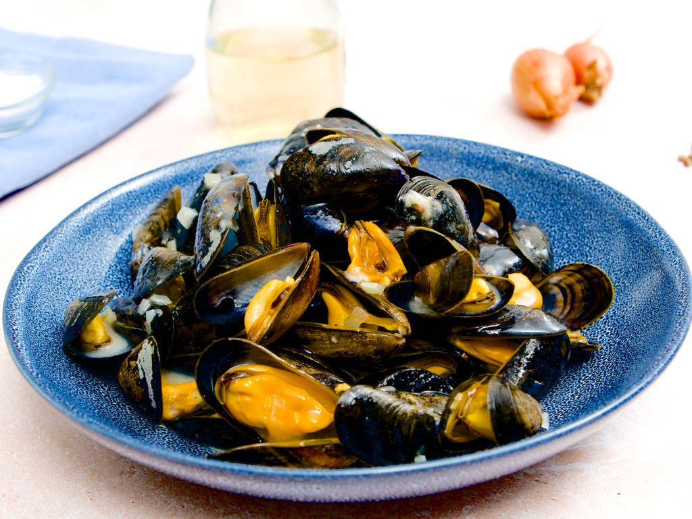

Moules marinières

Description
Cette recette vous apprendra à préparer des moules marinières simplement et rapidement !
Ingrédients
- Moules
- Poivre
- Sel
- Persil
- Cuillère à café de farine
- 30 grammes de beurre ou de margarine
- 2 échalottes
- 15 cl de vin blanc sec
Préparation
- Hachez finement les échalottes.
- Lavez les moules en pensant à les gratter pour retirer toute impureté sur la coquille puis mettez-les dans une cocotte accompagnées
d'une noisette de beurre et du vin blanc.